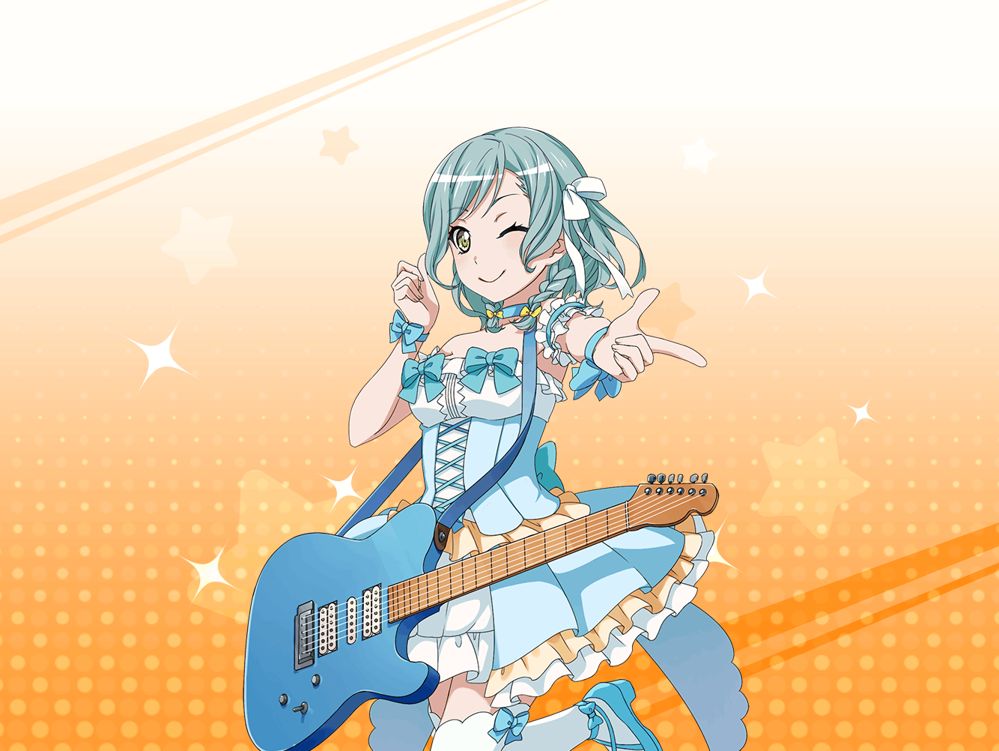

日菜
みんな、おっはよー！
イヴ
あ、ヒナさん！
おつかれさまです！
日菜
うん、おつかれー
日菜
……あれ？ まだイヴちゃんしか来てないんだね。
ちょっと早く来すぎたかな？
イヴ
早いに越したことはありません！
何事も早め早めの行動が大切ですから！
日菜
あはは、イヴちゃんは真面目でいい子だねー
日菜
ん？ その持ってるものは……
イヴ
この前のお披露目ライブのために撮った写真です！
日菜
もうできたんだ？
ちょっと見せて見せてー
イヴ
はい、どうぞ。
すごく綺麗に撮れていて嬉しいです！
イヴ
みなさん、衣装がとっても似合っていて、
本当にアイドルそのものに見えますね！
イヴ
これを着てライブすれば、
ファンのみなさんに、絶対喜んでもらえますよ！
日菜
…………
イヴ
ヒナさん？
どうかしましたか？？
もしかして、写真写りが悪かったとか……
日菜
んー、いや……
別にそういうんじゃなくて……
日菜
なんか不思議だなーって思って
イヴ
不思議、ですか？
日菜
うん。
人って衣装１つで印象が大きく変わるじゃない？
日菜
アイドルの衣装を着てるPastel＊Palettesのみんなは、
ひいき目に見てもすごくかわいいよね
イヴ
そうですね
日菜
たしかに『アイドル』そのものに見える
日菜
つまり、あたし達は衣装を着るだけで『アイドル』になれるんだよ
日菜
それと同じで、楽器さえ持っていれば
演奏できなくても『バンド』になれる……
日菜
いや、お客さんにとっては、
『Pastel＊Palettesはバンドをやっている』ように見えるんだ
イヴ
は、はぁ……
日菜
そういう衣装１つで自分達の見え方が変わるって、
なんかすごく不思議な感じがしてさー……
日菜
イヴちゃんも面白いと思わない？
イヴ
う、うーん……
イヴ
すみません……。
難しくてよくわかりませんでした……
日菜
んー。
例えばさ、武士って着物着ててちょんまげで、
だいたいみんな刀持ってるでしょ？
イヴ
そうですね！
悪を斬るための刀を差してます！
日菜
だからイヴちゃんも着物着てちょんまげつけて、
腰に刀差しちゃえば武士になれるってこと！
イヴ
あ、なるほど！
イヴ
じゃあ私、今日からちょんまげを結います！
イヴ
私もブシになってみたいです！
いいですか？
日菜
あはは！
ちょっと意味が違うけど、
ま、おもしろそうだからいいんじゃない？
イヴ
やった～！
刀ってどこに売っているんでしょうか？
あっ、着物も用意しなきゃ！
日菜
本気だねー
イヴ
本気ですよ！
これから私はブシ・アイドルとして活躍するつもりです！
きっとアヤさんも気に入ってくれますよね？
日菜
ん～、いいんじゃない？
彩ちゃんもちょんまげ似合いそうだし！
日菜
アイドルも武士も印象１つでなれちゃう……
実在しない不思議な存在なんだなー